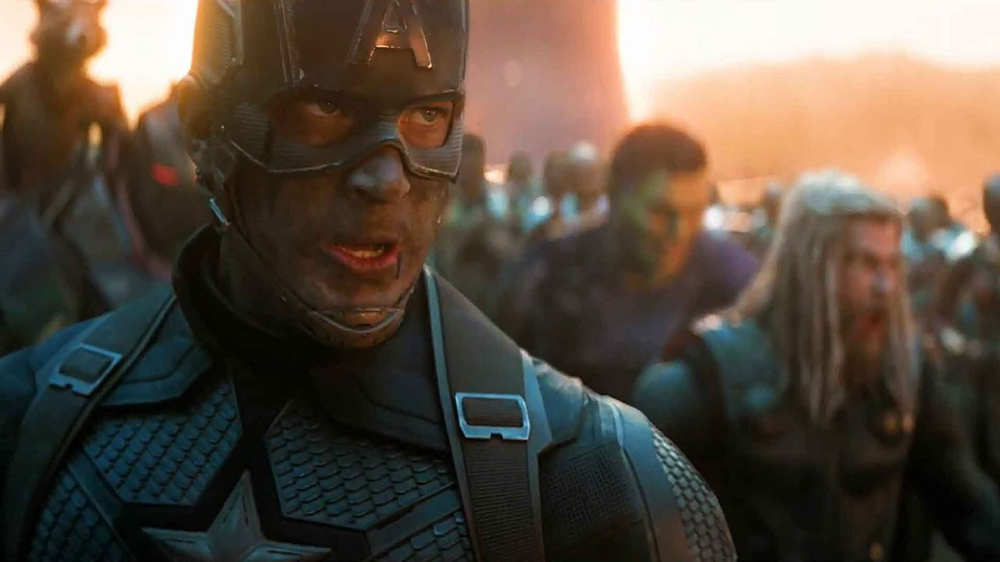

Advanced Chess Lesson
04/18/2021
In this video I analyze my most recent game on lichess.org against a 1900 player.
I think it's my best tutorial yet because computers make unrealistic moves and this game is close throughout.
Thanks!
In this video I analyze my most recent game on lichess.org against a 1900 player.
I think it's my best tutorial yet because computers make unrealistic moves and this game is close throughout.
Thanks!
I started paying $9.99 per month for analytics of this site through Netlify. I have over 2600 page requests and 600 unique viewers of the website in the last 30 days and viewership is growing.

So I have decided to try to monetize the site in a non invasive way.
I changed my contact tab to a shop tab where you can shop on amazon and I get a commision. I also took the reviews I already wrote for various products and made it so if you click on the picture it takes you to where you can buy it on amazon.
I hope you don't mind me trying to learn ways to pay for the site.
I have been working very hard on providing you all great content!
It's not the White Blood Cell's job to convince the Red Blood Cells that there is an infection.
The White Blood Cell is supposed to take the evidence to other White Blood Cells and attack the infection together.
It's not that the white blood cells are better or smarter than the red blood cells, it's that they have a different purpose.
A red blood cell does its job carrying oxygen to the organs and tissues. It is vital to the body's survival.
So too is the white blood cell. The WBC scans for signs of danger. The WBC shapeshifts to move more quickly before erradicating it's target.

White blood cells are less common than red blood cells.
White blood cells recognize when the body is under attack before red blood cells do because it is the job of the wbc to be alert.
If a white blood cell wasn't confident enough in what he saw, and asked around with red blood cells, or tried to convince them of the infection, nothing would get done and the body would die.
It is the duty of the white blood cell to ignore the red blood cells and commune with other wbcs and form a strategy of how to engulf or kill the infection in order to save the body.
"Bacterial infection causes red blood cells to rupture, releasing the oxygen-transporting molecule haemoglobin. As this oxidizes, it releases free haeme, which can trigger programmed cell death." source
In other words, when there is an infection, the red blood cells are damaged and actually become harmful. They drop the oxygen they were carrying and it becomes toxic.
So not only are the red blood cells oblivious to the attack, but they contribute to it. When under attack, the white blood cell has to stop the infection from turning the red blood cells into toxic death traps.
I think I am a white blood cell. Do you? If you don't think the body of government/ earth/ humanity is sick, then you're probably not a wbc. If you don't appreciate the metaphor, then you're probably not a wbc. WBC's study disease. Then when one comes along, they bring evidence to their wbc peers and one of them says, "I've studied that, here's how to kill it!" Then they all go save the body.
In times of Disease, the white blood cells are super important and need to act before the red blood cells become toxic and kill the body.
In times of Health, the red blood cells are super important because they need to move oxygen around the body so it functions properly when it's healthy. The WBC's have a minor role at that time just casually looking for danger and raising the alarm over small threats.
I'm raising the biggest alarm I can. This entire website is like a white blood cell on a bullhorn saying "We are under attack! White Blood Cells, Assemble!"
In the metaphor I'm using, the red blood cell could be like a surgeon, performing life saving procedures. It's not the surgeons job to watch illuminati videos on youtube. He's supposed to concentrate on his craft. He is a Red Blood Cell. It's nothing to be ashamed of. It's necessary. It's more necessary than White Blood Cells, and that's why there are more of them.
White blood cells would be like the truthers. They spend their time studying dystopias and tyrannies in history and fiction like 1984 and Brave New World. They major in philosophy. Then they raise the alarm when Covid Vaccine Passports remind them of papers in Nazi Germany. "Hey, I've seen this before!" They say. Or, "I don't like where this is going..." My job is not to be a brain surgeon. It's to gather all the evidence I have gleaned of the infection (tyranny) as a white blood cell (truther), and to advertise the problem so other white blood cells (truthers) can join up and fight the infection (tyranny).
Happy birthday to my sister, Melissa. Today I proposed a new type of news feed with maxjann.com/news and I wrote a news story on vaccine passports.
I'm really thrilled Russell Brand is making these videos and can see through the smokescreen so many are befuddled by.
When I graduated from Coding Dojo I started applying for jobs as a web developer and game designer.
I would hear nothing back, or when I did hear something back, it was a rejection letter.
I was spending so much of my time trying to be accepted by them, I was barely getting any work done. Then something occured to me.
What if I switched the script on these companies? What if instead of receiving rejection letters I wrote them one instead?
"Dear Google", I wrote, "Thank you for your interest in me and your offer of a position in your company. However, at this time, I'm focused on my personal projects like making a 3D video game. Sincerely, Maxwell Lawrence Jann."
This put me in a mindset of abundance rather than lack. In order to write that letter I had to enter the mindset of being valuable. I had to justify the letter and come up with reasons why I was turning them down. With this new mindset, my productivity soared, and wouldn't you know, Google called me for an interview. I never even applied. All I did was write them a rejection letter and not send it anywhere. I flipped the script on Reality. Instead of not getting accepted anywhere, I had Google pitching me.
Then Amazon came knocking as well. I also didn't apply to them. I wasn't applying anywhere, I was just working. Suddenly I had 2 dream interviews set up.
I ended up blowing all my interviews. I was addicted to marijuana and video games and just blew it. The night before my Amazon interview I was up all night smoking and in the morning I was basically too sick to do it, but it made no sense anyway because I wasn't prepared.
When I went to Santa Cruz for the second time, in my senior year, I was intent on getting a girlfriend. It was my goal. To pass my classes and get a girlfriend. It wasn't really working out trying to get a girlfriend, then suddenly I came across this video online. It was a hypnosis video called "Pretty girls are vying for my attention" and it just said that over and over. It was welcome to me because I was so tired of trying to get a girlfriend I liked the idea of them trying to get me for a change. The next day, I met my girlfriend. I just walked right up to her table and sat down and had lunch with her and got her number and asked her out. I was of the mindset that she wanted that to happen, so it did. When my mindset was that I want it, it wouldn't work, but the instant I flipped the script on Reality, I had a beautiful college girlfriend named Ashley.
I can't find the video but it may have been pornagraphic. I think it was on a pornagraphic website but somehow not explict. Anyway, it was hypnosis and it totally worked and I ended up graduating that year with that girlfriend and she was asking me to be her boyfriend and sleeping with me before I knew what happened. I said no because I already had a date with my crush I suddenly had the confidence to ask out. It was very bizarre how fast everything changed after my perspective did.
Those are the 2 that stick out to me. More recently I would say that I switched my mindset at work from "This is broken" to "I'm going to fix it and it's going to be awesome" and that worked out nicely with a raise, but it's not quite as awesome as a girlfriend or a google interview.
Will Smith has a great quote that if you decide what's going to happen the universe will get out of your way like a river going around a rock.
I guess what I've decided is that I'm going to build an awesome website and create worthwhile content to the best of my ability and I'm going to create an online ecosystem where people can experience my contribution to the world. My gift to people.
New Song! I think it's one of my best ever.
The philosophy of Censorship and the smartest man in the world
Yes, I'm writing a paper on the new movie Godzilla vs. Kong. This essay is not for the uninitiated. I'm not going to hamstring myself by walking you through how I got here. I'm going to be writing about the bleeding edge of my thoughts. I think that Godzilla vs. Kong contained many hidden messages and profound meaning. I think you had the usual Hollywood tricks, but also some truth drops as well as an esoteric theme.
Godzilla represents God. King Kong represents Humanity. Mechagodzilla represents technology.
King kong doesn't bow down to anyone, not even Godzilla. This pisses Godzilla off. Godzilla pins King Kong, and instead of finishing him off with his atomic breath, he just roars in his face, and Kong finally submits with a roar of his own acknowledging, "Ya, you win". Godzilla has proven his point and walks away.
In an earlier scene, Godzilla attacks the corporation Apex because they are making Mechagodzilla and trying to replace him. God doesnt like technology trying to play God. The theme of this movie is that once man submits to God, he and God can work together to overcome technology. Technology is the real enemy. The little deaf girl in the film who communicates with Kong even tells him, "Godzilla is not your enemy. That (Mechagodzilla) is your enemy." So King Kong, who represents us and our hubris, switches from losing an impossible battle with God, to teaming up with God against technology.
The hollywood tricks are having things like wacky conspiracy theorists and podcasts and kind of poking fun at the whole truth movement. They even mention fluoride in the tap water. Hollywood also drops a 33 several times in the film, but none more significant than in the elevator. In the beginning of the movie, you have a black podcaster conspiracy theorist trying to expose his own company, apex. He hacks into the computer and sees something secret on "Sublevel 33" in the manifest. The number 33 is a reference to freemasonry and the 33rd degree being the highest degree.
Later in the elevator, the black guy and millie bobby brown and her sidekick are traveling to the sublevel 33 and the sidekick asks, "How deep does it go?" and the black guy replies, "Hell. It goes all the way to Hell". This is one of the most crucial parts of the movie to understand. Since the 33rd sublevel is a reference to freemasonry, the sidekick is really asking "What happens if you keep progressing after reaching the 33rd rank?" And then Hollywood is saying back, "You can keep going deeper and deeper into the secret societies until it takes you all the way to hell." Like the Devil, is an infinity degree mason.
See, Lucifer thought he could outdo God. That's the whole idea of this movie. Godzilla is God which means he rules over Kings, like King Kong. God is King of Kings. But Lucifer thinks he can use technology to overpower God. Lucifer goes to war with God. Lucifer loses and is cast out to Earth with his angels. That's where we are. Lucifer is still trying to outdo God by playing God himself in a competitive way.
So eventually, like in the final scene of the movie, technology and God will go to war again, and humanity will be watching. And we should side with God and defeat technology. Instead of rebelling against God, like Humanity is currently doing, we should be rebelling against technology instead and honouring God.
The Luciferian mindset would be for Kong to side with Mechagodzilla and watch Godzilla die. The Irony of that is that Mechagodzilla would probalby kill King Kong after he's done with Godzilla.
Godzilla is the only thing capable of overpowering King Kong without killing him. Like, King Kong has to chose in the final scene between two masters. Technology or God. Only God will spare him as his master. Technology will destroy him. The little deaf girl explains this to him and she would represent wisdom or compassion in this movie. So Kong sides with Godzilla and then has a truce with him at the end, an understanding that they can work together, and that Godzilla could kill him if he really wanted to, and that's okay,
Better to deal with the devil you know, then the one you don't.
You cannot serve two masters, God and Technology. Either you will hate one or despise the other, In the bible the two masters are God and Money. But I think Technology is becoming more important than money.
Godzilla even has God in his name. And King Kong is a monkey, and we have most in common with monkies. I think it's a Titan Metaphor for the relationship between God, Man, and Technology. I think the deeper you go into freemasonry, the closer you get to hell. Hell is for people who chose Technology over God. Hell is the place for The Devil who was Lucifer and all the fallen Angels who thought they could do better than God.
Trying to replace God is the ultimate act of disrespect toward your creator. I always operate under the assumption that I know very little compared to God. I see more wisdom in a tree than I do in most people. I see the branches sprawling in different directions to get sunlight, and the root structure making the most of its surroundings. I view nature as supremely intelligent. Man can try to beat it with technology, but that's a luciferian pursuit. I think there is a place for technology, but that it's important to respect God and Nature while you're building it.
Amen.
Again, if you think you don't need God to get to Heaven. If you think you can create your own heaven or be your own God that is what Lucifer thought too. If you think you don't need the keys to Hades that Jesus has to overcome death, if you think you can build your own keys and become immortal yourself with technology then you are antichrist and luciferian.
Also, notice how the human who builds the technology to overthrow God(zilla) ends up getting killed by his own technology. So, the message God is sending is that if you try to overthrow him with technology it will be your own demise. That path is death. Surrendering to God is the only path to life, for King Kong, or humanity.
Thanks!
I had my video removed by youtube!!!! I'm so honoured. I'd like to thank the academy.... so here is a video of the video, I'm guessing my channel will soon be banned. I defeated the Russian in chess by the way, and then I blew a winning endgame in the third game.

I took another crack at making a meme creator app . It's surprisingly difficult to make the picture the user enters into a meme where the top and bottom text appear over the picture. Text, pic, Text is easy but having the three jumbled together is very hard to work with. My idea was to use an invisable image of the same image in between the text. That way I can set the background to the whole div and have my text inside that background with the proper space in between. It works but I have to set background image to cover instead of contain. Problem with "cover" is that it fills up the whole div even if part of it is off screen. Contain will shrink it down so it fits but I need it to cover the whole div so the text is agains the picture instead of over it or below it.
This music video is just a still image but animated. It's so cool it's why I learned photoshop and I'd like to be able to do that for my own songs
I like making DJ Aliens so much I want to make more single page web applications.
I've always liked messing around with Object Oriented Programming. I've made DBZ games in the past
Now I'm making a pokemon card game.
Eventually I would want to make up my own card game with my own rules and strategy
It would be fun to make a game with AI that I enjoy playing.
The latest pokemon game was too easy, so I want something like that but more challenging.
This video from Matt discusses Travelling to Hawaii during Covid and being forced to quarantine in a hotel room even when you're not sick.
My friend Matt, who in my last video I compared to the Fields Medal Winner in Good Will Hunting, recently travelled to Hawaii and had to deal with quarantining as well. Matt from Quantum of Conscience also had a friend locked down due to a paperwork error. This video is pure gold so I'm going to introduce a new gold color scheme for special posts like this moving forward.
And let me just say, What's the difference between the Taliban forcing women to cover their faces, and my local Jersey Mike's doing the same thing for me to get my sandwich?
In order for me to go out into public and get a sandwich, I have to wear a mask. If I forget my mask, I will be unable to purchase my food. So do you see the connection to the Taliban situation now? You might think, well God isn't real so those Taliban guys are forcing dumb rules for a nonexistant God, whereas in the US we are free but coronavirus is real so we have to take precautions. No. The situations are parallel and the same. The fact is both you in america today and a girl in the taliban of 10 years ago both have to put on a face covering to go out in public. Period.
What's the point of a bill of rights when the Government is in a perpetual state of emergency? How can people actually think they have any rights or civil liberties when they are circumvented at the drop of a hat by our Governor Gruesome. Gavin Newsome - G. Newsome - Gruesome I'll call him. Gaverner Gruesome can just order my movie theater to be closed and my job to fire me because of an invisible threat, so where are my rights? It's madness.